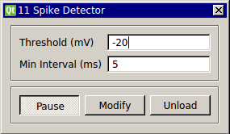

Requirements: None
Limitations: None

This module uses a simple threshold to detect spikes. The cell can be in one of 5 states:
0: Looking for voltage to cross above threshold;
1: Cell has crossed threshold going up;
2: Cell is above threshold;
3: Cell is crossing threshold going down
4: Depolarization block. cell has been above threshold for more than 100ms.
-1: Reset state. Will reset if cell hasn’t spike since the minimum interval
In addition, you can set a refractory period, the minimum interval that must go by before another spike can be detected again.